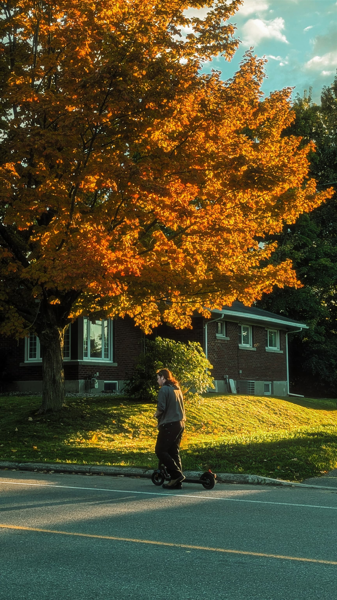
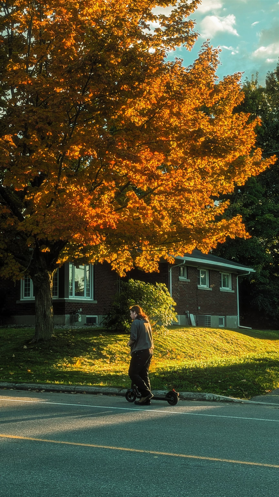
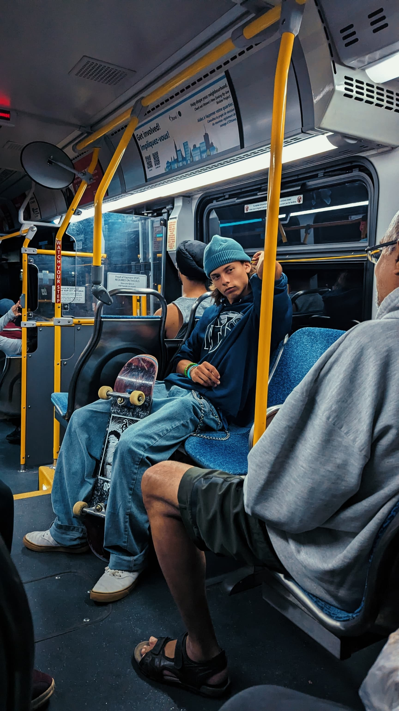
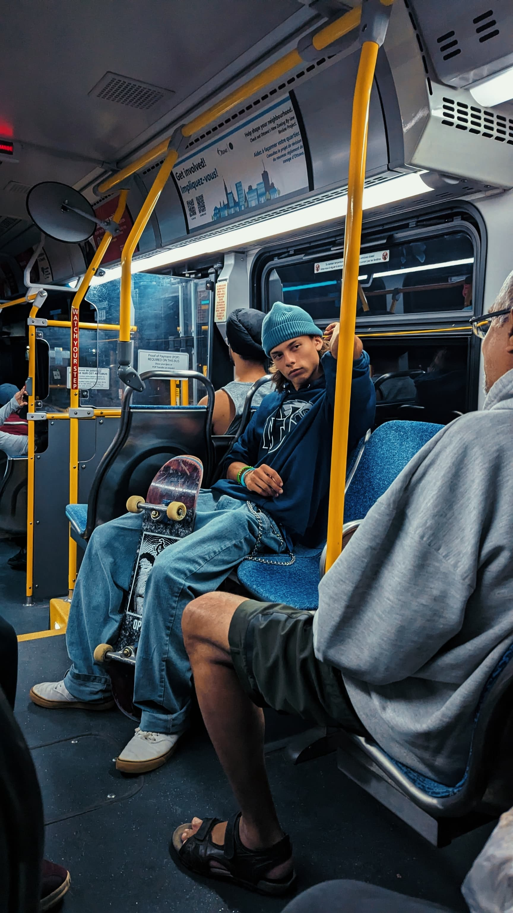

About Me

I am a passionate Visual artist,who loves to travel, write and take photos. Art and design have always been source of passion and inspiration for me, driving my commitment to continuosly expand my knowledge and skills in this field. The immense creativity found in art and design served as a tremendous inspiration for me to pursue higher education. Motivated by this inspiration, I enrolled in University to pursue a bachelor's degree in Visual Communication.
Quote
" I know of no greater purpose than to perish in the attempt of the Great and the Impossible - Freidrich Neitzsche
My Hobbies
- Travelling - For me, Travelling is a way of finding myself out there. I'm a person who actually love to wander, write, take photos. Once i came across a quote , tha tgoes by this "Humans and trees were created on planet earth and humans were gifted with legs instead of roots to travel the world "
- Takling Photos - I soley believe that life is temprorary and ART is forever and as a passionate individual about Art , i make photographs ,which according to me is the only way to freeze time or a moment
-
Photo Gallery
 

 


- Writing- I always try to bring my ideas into life as an artist . Inorder to achieve that write down my thougts and brainstorm ideas out of it. So i belive writing down my ideas help me to be always creative and organized